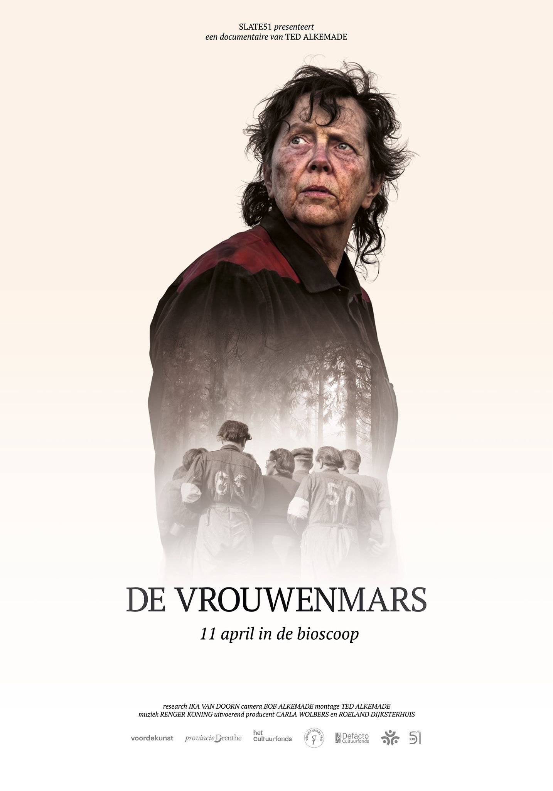
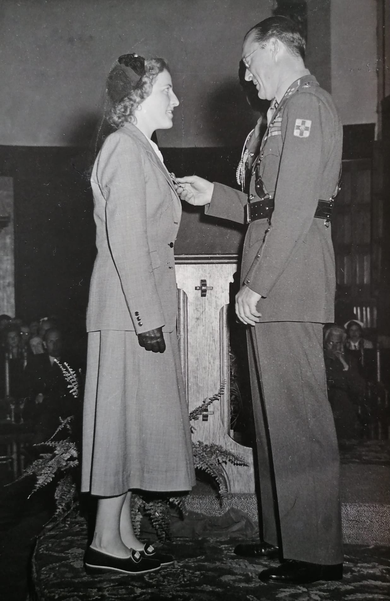

Mijn oma liep de Vrouwenmars
Mijn oma, Albertien Lunshof-Lunshof, liep op 11 april 1945 mee in de vrouwenmars: 116 vrouwelijke politieke gevangenen die te voet uit Kamp Westerbork vertrokken, bewaakt door bijna tweemaal zoveel Duitse soldaten. Uit haar ooggetuigenverslag, dat in het archief van het Herinneringscentrum Kamp Westerbork ligt, wist ik dat ze in die laatste dagen van de oorlog voortdurend te maken had met de beruchte kampcommandant Gemmeker. Op 14 april werden ze bevrijd bij Grijpskerk door Canadese troepen. Mijn oma had nummer 104. Die mars staat bekend als de Vrouwenmars.
Over die mars hebben producent Carla Wolbers, regisseur Ted Alkemade en researcher Ika van Doorn van Slate51 de documentaire De Vrouwenmars gemaakt, die op 11 april 2026 in première gaat in de bioscoop — precies 81 jaar na de dag dat de mars begon.

vrouwenmars1945.nl De Vrouwenmars — 11 april in de bioscoop De namenlijst van de 116 vrouwen

Grijpskerk, 18 april 1945 — de vrouwen van de mars met Prins Bernhard. De vrouw op de achterste rij, vijfde rechts van Bernhard, is waarschijnlijk mijn oma. Foto: Willem van de Poll, Nationaal Archief.
Haar jongste zusje, G.H. Lunshof — mijn tante Gé, die veel te vroeg stierf aan leukemie — schuilnaam "Tiny", woonde boven mijn oma op de Celebesstraat 22a in Groningen. Uit de archiefkaarten kon ik afleiden dat veel van hun medestrijders in het verzet naast hen woonden of om de hoek — in de context van die tijd best heel logisch.
Tante Gé zat bij de GDN en de ID, en was op eenentwintigjarige leeftijd de secretaresse van Willem Schoemaker, op dat moment het hoofd van de GDN en een van de belangrijkste verzetscoördinatoren van Nederland. In het najaar van 1944 werd ze als spionne op missie gestuurd naar het hart van Nazi-Duitsland — Berlijn. Uit familieoverlevering weet ik dat ze op het dak van een trein Duitsland weer uit is gevlucht. Ze kreeg de Bronzen Leeuw van Prins Bernhard — de op een na hoogste militaire onderscheiding van Nederland.

G.H. Lunshof ontvangt de Bronzen Leeuw van Prins Bernhard
Hun archiefkaarten in de Groninger Archieven:
Albert Lunshof — minr 1153854 G.H. Lunshof — minr 1153857
Hoe ik hier terechtkwam
Een paar weken eerder ging ik voor het eerst op zoek naar de familielijn van mijn vaderskant en leerde ik met behulp van AI op een heel andere manier met archieven omgaan. Dat resulteerde onder andere in het uitbetalingsbonnetje van de betovergrootvader van mijn oma, die blijkbaar gediend had onder Wellington in de Slag bij Waterloo. Zonder die ervaring had ik dit project niet kunnen doen.
Achtergrond (weekberichten):
Wat er gebeurde
In de weken daarvoor had ik voor een ander archiefproject een pipeline gebouwd die met behulp van AI handschrift kan ontcijferen en structureren. In de nacht van 5 op 6 april 2026 hergebruikte ik die pipeline op 3.150 handgeschreven verzetskaarten uit het Groninger Archief. In 100 minuten en voor vijftig euro aan API-kosten (een verwaarloosbaar bedrag gezien de opbrengst) werden ze omgezet in gestructureerde gegevens: naam, schuilnaam, geboortedatum, beroep, verzetsgroep, wat ze deden, wie ze kenden, of ze gearresteerd werden, en of ze het overleefden.
De kaarten waren al meer dan twintig jaar gedigitaliseerd — er was met noeste arbeid een foto van gemaakt en ze waren gemetadateerd. Maar ze waren nooit geïnformatiseerd: de inhoud was niet doorzoekbaar of koppelbaar, en ook niet telbaar (wat handig is bij analyses). Je kon een kaart opzoeken als je de naam al kende. Maar je kon niet vragen: wie werd er op 13 november 1943 gearresteerd? of hoeveel kaarten noemen verraad?
Nu kan dat.
Dat leverde 3.034 verhaalkaarten op, gecrosscheckt tegen 6 online bronnen, met 489 sterke externe bevestigingen. Dit zijn voor de duidelijkheid niet 3.034 antwoorden, maar 3.034 uit te zoeken puzzels — onderzoeksvragen. Puzzelstukjes die voor een groot deel tachtig jaar onzichtbaar waren, verstopt over een veelheid van archiefindexkaarten.
De transcriptie draaide 's nachts terwijl ik sliep — de volgende ochtend lagen 3.150 gestructureerde kaarten klaar. De verificatie is nog niet af en zal maanden kosten. Dat is precies het punt: de snelheid maakt het mogelijk om verbanden bloot te leggen die handmatig ondoenlijk waren. De zorgvuldigheid moet daarna komen — en daar is hulp bij welkom.